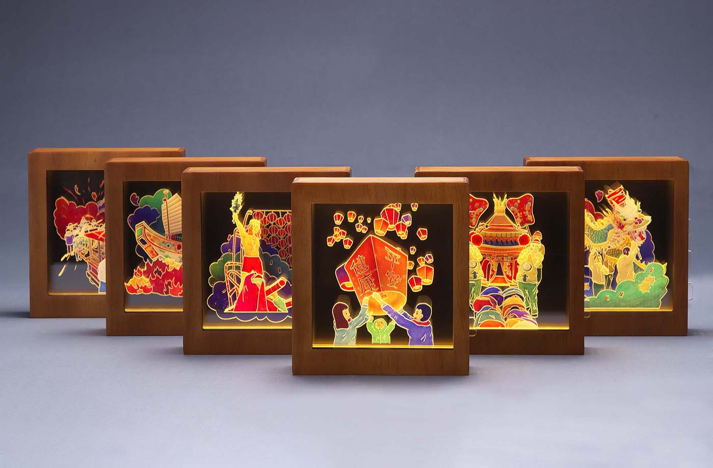
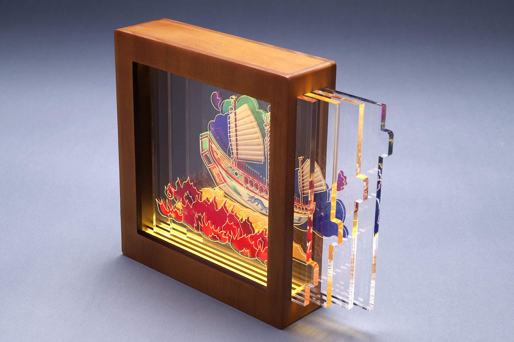
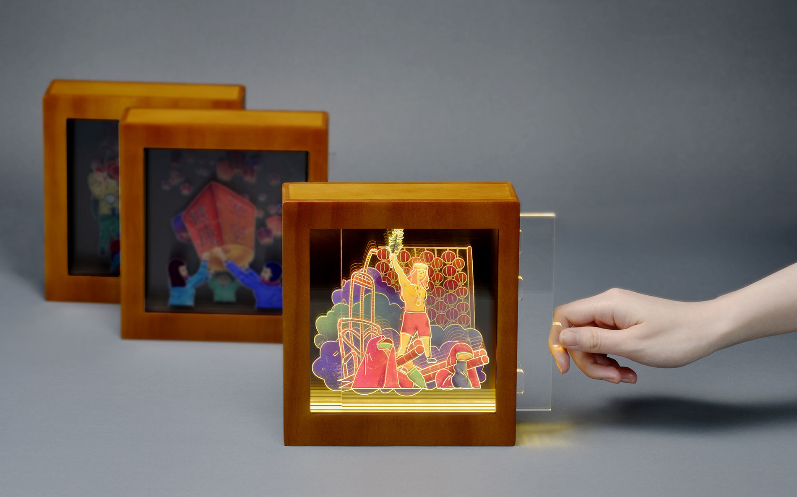
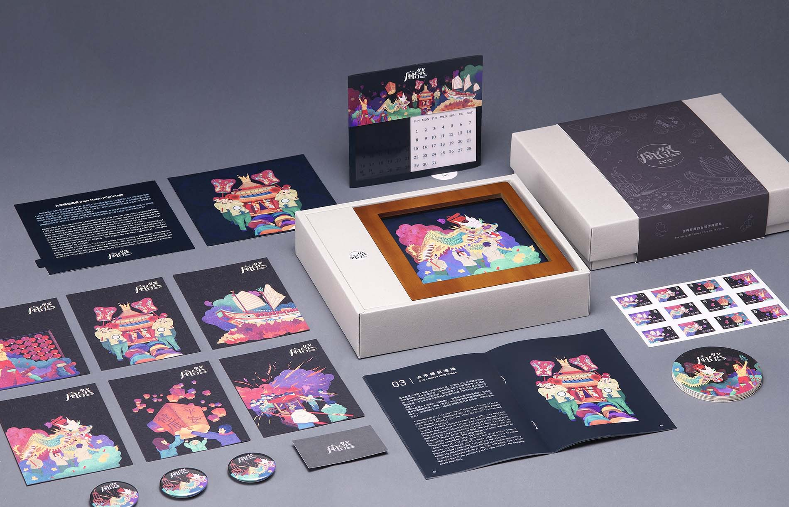
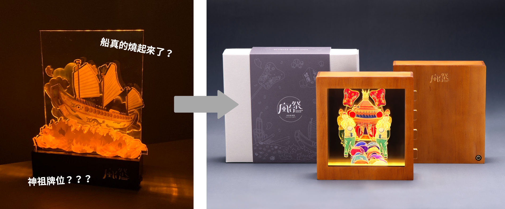
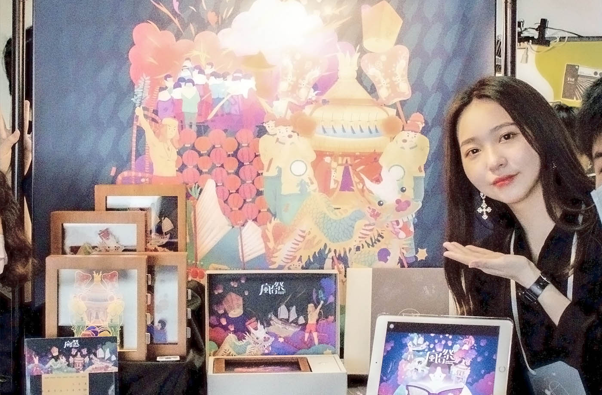

將六個台灣傳統祭典化為多層壓克力燈箱與禮盒設計，用插畫與工藝讓在地文化走入日常，同時讓外國人看見更立體的台灣。獲得兩項 Red Dot Award 肯定。
瘋台祭致力於推廣台灣祭典文化。由台灣交通部觀光局統計，選出最具代表性的六個台灣祭典，透過具有文化意象的插畫搭配豐富色彩，結合現代媒材，將平面插圖分層，從平面做成立體的燈箱，讓傳統祭典文化真正普及到生活中。
除了視覺設計，我們也希望透過印刷物應用增加文化傳遞效果：讓收到這份禮物的人對本土祭典有更深的認同感，也讓外國人對台灣傳統有全新的認識。
在研究過程中，我們發現幾個核心問題：
「如何讓人把文化帶回家，而不只是在現場看了就忘？」
— 設計核心命題
鎖定的主要客群涵蓋國內外觀光客、工藝品收藏家，以及在地文化愛好者。

根據參考素材與祭典照片繪製線稿，並賦予高飽和的色彩系統，共繪製六款祭典插畫：
每幅畫拆分為四層壓克力，透過雷射切割的矩形把手拉出，可觀察到祭典層次間的完整樣貌。多層結構讓燈箱發亮時產生無限延伸的空間感，是平面設計無法呈現的視覺體驗。

插畫分層結構與壓克力燈箱組合方式

六款祭典燈箱成品
包裝採用禮盒上下蓋設計，讓開箱體驗本身就成為品牌傳達的一部分：

禮盒整體包裝設計——外盒、內盒與開箱體驗
這個作品做了一年多，過程中遇到無數需要解決的技術問題和溝通挑戰，尤其在燈箱結構上調整了非常多次。
「第一版燈箱底座太厚重，加上橘黃燈光，整體氛圍過於沉重，像極了神主牌位。」
— 設計迭代過程
後期調整為全框式設計，燈光改成暖白光，整體質感立刻提升。雖然很可惜因為疫情的關係，多場展覽機會被迫取消，但最終能以兩項 Red Dot 結尾，代表這一年多的堅持有了明確的市場與國際認可。

燈箱製作迭代過程紀錄

校內成果展覽現場